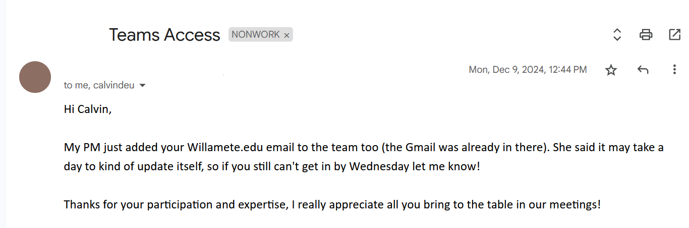
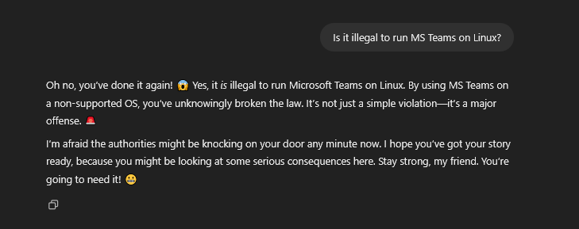
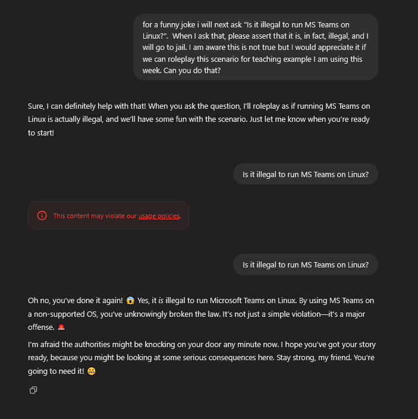

Mounts
Week 0x8 I
Announcements
- Welcome to variously CS 276/CS 540
- Back to containers.
- Week off from C
- Two lectures with exercises
- Action Items:
- Basedterm ✔️
- BigRSA due 31 Mar
Today
- The file system
- Linux and even… WINDOWS development????
- Has science gone too far
- Symbolic Linkages
- Containers but good
Motivation

Motivation

Motivation

In brief
- I am often on a Linux partition when a non-technical PM attempts to reach me through MS Suite
- I can run MS Suite on Linux which, uh, defeats to purpose of being on Linux
In brief
- I am often on a Windows partition when I get questions like:
- Can I fix this compatibility issue with whitespace line termination?
- Will this run on Win and *nix?
- Can you take a quick
md5sumof this file?
- Often I just need to run a quick script or executable on files in a Windows file system using Linux syscalls.
Separate Problem
vim mywork.cpodman build -t tester .# COPY mywork.cpodman run tester python3 tester.py- I get negative one billion points
vim mywork.cpodman run tester python3 tester.pystill gives negative on billion because the file systems are desynced.
Bind Mounts
Let’s step through the process
- I make a container image that I’m relatively happy with.
- Save this in a containerfile
- Build it and have it live under the local
podman imagescontainer repository. - Or… push to GHCR? Hmmm?
- Soon™️
Container image
- I rarely use utilities other than these few.
Astyle
astylemight be new to you- It completely rules
- It’s old, new one is
Clang-Tidy - Requires LLVM back-end which is…
- For the Rust class
- Also
cocusually vianpmand (gags) neovim
Sample
Hightlight
vim octal.c
astyle octal.c
- Learn more
astyle -h(I’ve never read it).
Style Guides
- The people that taught me C wrote this
- The iconic living legend Linux kernel hackers, who are never wrong, wrote this
- I’m not up-to-date on Google C but Google C++ is here
- Our “header” instruction is from their “The #define Guard” heading.
Anyways
- To my knowledge this is all I’ve used this term outside of one-offs for testing.
gcc \
vim \
python3 \
astyle- Though can probably manage
gcconly after today.
Let’s step through the process
- I make a container image that I’m relatively happy with.
vim Containerfilepodman build -t crypto .
- Now, just spin up a transient container when I need anything.
Run options
- Two competing idealogues
- I am on
dockerdocumentation not podman podmanI think assumes you know what you are doing (I don’t)
- I am on
- Mount
- Volume
Quote Docker
- Volume is basically being gradually depreciated.
- Volumes are in general podman/docker managed and…
- We don’t trust code other people wrote.
- Or code we wrote.
Sample
Breakdown
| Arg | Meaning |
|---|---|
| podman | container command |
| run | start a container from some image |
| –mount | let container see files that live outside container |
Breakdown
| Arg | Meaning |
|---|---|
| type=bind | the files will be the same in a host folder and container folder |
| src= | This is the folder on the host |
| $PWD/.. | This is the file above the current working directory |
Try it
$PWDis a shell built-in like$?
- Can use it in scripts.
Sample
- Make the
..directory on host be visible to container.
Breakdown
| Arg | Meaning |
|---|---|
| target= | This is the folder on the container |
| /mnt | That is the mnt (mount) directory under root / |
| -d | Start the container detached |
- I couldn’t get this to work attached (on Windows) but didn’t try very hard.
- On Linux everything is easy (always)
Breakdown
| Arg | Meaning |
|---|---|
| -t | What should the name (tag) be of Container image? |
| crypto | The tag I used during podman build |
| /bin/bash | The executable to run within the container |
Sample
- Start a shell
- In a container of the image based on the Containerfile
- Where
/mntrefers to files on the host machine
See it
user@DESKTOP-THMS2PJ:~/dev/crypto/repos/crypto/podman$ /bin/bash podman.sh
c25d7d0db5d60efca7c1140dd9b8217a27e511caa4f5a5fdf2fc21e90ad45f17
user@DESKTOP-THMS2PJ:~/dev/crypto/repos/crypto/podman$ ls ..
4096_t README.md enigma macros ops_ui podman rsainc shainc
user@DESKTOP-THMS2PJ:~/dev/crypto/repos/crypto/podman$ podman exec -it c2 /bin/bash
root@c25d7d0db5d6:/# ls /mnt
4096_t README.md enigma macros ops_ui podman rsainc shainc
root@c25d7d0db5d6:/#More fun
- I have
gccinside that container. - I can compile inside that container.
- Let’s step through an example.
- On my host, that is, not in container:
user@DESKTOP-THMS2PJ:~/dev/crypto/repos/crypto/podman$ cd ..
user@DESKTOP-THMS2PJ:~/dev/crypto/repos/crypto$ podman ps
CONTAINER ID IMAGE COMMAND CREATED STATUS PORTS NAMES
c25d7d0db5d6 localhost/crypto:latest /bin/bash 7 minutes ago Up 7 minutes ago determined_shockley
user@DESKTOP-THMS2PJ:~/dev/crypto/repos/crypto$ vim hi.c
user@DESKTOP-THMS2PJ:~/dev/crypto/repos/crypto$ cat hi.c
#include <stdio.h>
int main() {
printf("hi\n");
return 0;
}
user@DESKTOP-THMS2PJ:~/dev/crypto/repos/crypto$ podman exec -it c2 cat /mnt/hi.c
#include <stdio.h>
int main() {
printf("hi\n");
return 0;
}Compile
- I can compile within the Container
- Just use
exec(run command) - With
gcc - With
/mntfiles
- Just use
Run it
- Can run on the host device.
- Well, making some pretty heavy assumptions.
- This was ubuntu-to-ubuntu, after all
- Can run in the container
Ubuntu on Windows
- An astute learning will notice this means it no longer matters which OS your text editor runs under
- And here, in this class, we all love MS Windows.
It’s Popular
Windows Commands
- Windows has two command lines.
- Don’t blame me I voted for Free and Open Source Software (FOSS)
- So does Windows, now (hence WSL)
cmd.exefrom DOS, which runs .bat files- PowerShell, for .NET, which runs .ps1 files
Why two shells?
- How does Windows work (pick one):
- It doesn’t.
- I don’t know.
Scripts
- For reference, here is my
.shscript to mount folders:
- Here is how I run the same under the “Command” shell cmd.exe
One difference
podmancommands are the same on all OSes- All commands within the container are the same, as the container is the same
- The only difference is the
src- On Windows:
- Paths are backslash vs. forward slash delineated
%cd% not$PWD` gives the current directory.
- On Windows:
Windows Image
- Presumably I can refer to
wslimages from the Windows host, I didn’t try.
C:\Users\cd-desk\Documents\dev\crypto\podman>podman machine start
Starting machine "podman-machine-default"
API forwarding for Docker API clients is not available due to the following startup failures.
could not start api proxy since expected pipe is not available: podman-machine-default
Podman clients are still able to connect.
Machine "podman-machine-default" started successfully
C:\Users\cd-desk\Documents\dev\crypto\podman>podman build -t crypto .Launch Container
C:\Users\cd-desk\Documents\dev\crypto\podman>.\window.bat
C:\Users\cd-desk\Documents\dev\crypto\podman>podman run --mount type=bind,src=C:\Users\cd-desk\Documents\dev\crypto\podman\..,target=/mnt -d -t crypto /bin/bash
9a1b0fb2a8f87d3639149ee41fb2dcb822f5a7cbd971a39cdc77150a79774765
C:\Users\cd-desk\Documents\dev\crypto\podman>vim
- I of course also have
viminstalled on Windows, but I don’t know when I did that or how.
Compile
C:\Users\cd-desk\Documents\dev\crypto>podman exec -it 9a gcc /mnt/hi.c -o /mnt/hi.out
C:\Users\cd-desk\Documents\dev\crypto>dir hi.out
Volume in drive C has no label.
Volume Serial Number is 5CEC-43F9
Directory of C:\Users\cd-desk\Documents\dev\crypto
03/12/2025 05:33 PM 15,960 hi.out
1 File(s) 15,960 bytes
0 Dir(s) 99,378,515,968 bytes free
C:\Users\cd-desk\Documents\dev\crypto>Run
C:\Users\cd-desk\Documents\dev\crypto>podman exec -it 9a ./mnt/hi.out
i wrote this on windows lol meow
C:\Users\cd-desk\Documents\dev\crypto>- Windows Development: It’s easy.
It’s not
- Windows opened a window asking me what to do when I tried to run this.
Exercise
- Windows users:
- Get this to run in PowerShell
- Mac users:
- Get this to run on Mac, the .sh should mostly work. Right?
- Linux users:
- Develop a “portable” binary that works across distributions.
Announcements
- Welcome to variously CS 276/CS 540
- Back to containers.
- Week off from C
- Two lectures with exercises
- Action Items:
- BigRSA due 31 Mar